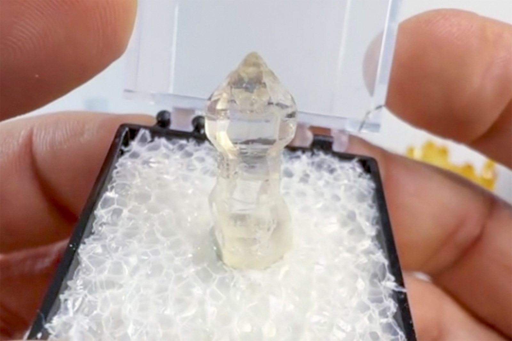

Quartz
"Quartz Scepter TN"
VIII-10787
Andilamena District, Alaotra-Mangoro, Madagascar
Purchased 7/14/2026 from Dedication Minerals for $4.00
Core Collection • Received
Details
Storage Type: Unassigned
Storage Location: 000 None
Size class: Cabinet (0)
Dimensions: 2.2 × 0.8 × 0.6 cm
Mass: 1.5 g
Luster: Unrecorded